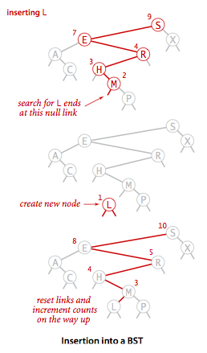
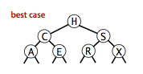

Binary Search Trees
We examine a symbol-table implementation that combines the flexibility of insertion in linked lists with the efficiency of search in an ordered array. Specifically, using two links per node leads to an efficient symbol-table implementation based on the binary search tree data structure, which qualifies as one of the most fundamental algorithms in computer science.
Definition. A binary search tree (BST) is a binary
tree where each node has a Comparable key
(and an associated value) and satisfies the restriction
that the key in any node is larger than the keys in all
nodes in that node's left subtree and smaller than the keys
in all nodes in that node's right subtree.


§ Basic implementation.
Program BST.java implements
the ordered symbol-table API using a binary search tree.
We define a inner private class to define nodes in BST.
Each node contains a key, a value, a left link, a right link, and a node count.
The left link points to a BST for
items with smaller keys, and the right link points to a BST for items with
larger keys. The instance variable N gives the node count
in the subtree rooted at the node. This field facilitates the implementation
of various ordered symbol-table operations, as you will see.

- Search.
A recursive algorithm to search for a key in a BST
follows immediately from the recursive structure: If the tree is
empty, we have a search miss; if the search key is equal to the key at the root, we have a
search hit. Otherwise, we search (recursively) in the appropriate subtree.
The recursive
get()method implements this algorithm directly. It takes a node (root of a subtree) as first argument and a key as second argument, starting with the root of the tree and the search key.
- Insert.
Insert is not much more difficult to implement than search.
Indeed, a search for a key not in the tree ends
at a null link, and all that we need to do is replace that link with a
new node containing the key.
The recursive
put()method accomplishes this task using logic similar to that we used for the recursive search: If the tree is empty, we return a new node containing the key and value; if the search key is less than the key at the root, we set the left link to the result of inserting the key into the left subtree; otherwise, we set the right link to the result of inserting the key into the right subtree.
§ Analysis.
The running times of algorithms on binary search trees depend on the shapes of the trees, which, in turn, depends on the order in which keys are inserted.
 

It is reasonable, for many applications, to use the following simple model: We assume that the keys are (uniformly) random, or, equivalently, that they are inserted in random order.
 Proposition.
Proposition.
Search hits in a BST built from N random keys requires ~ 2 ln N (about 1.39 lg N) compares on the average.
Proposition.
Insertion and search misses in a BST built from N random keys requires ~ 2 ln N (about 1.39 lg N) compares on the average.
The visualization below shows the result of inserting 255 keys in a BST in random order. It displays the number of keys (N), the maximum number of nodes on a path from the root to a leaf (max), the average number of nodes on a path from the root to a leaf (avg), the average number of nodes on a path from the root to a leaf in a perfectly balanced BST (opt).
§ Order-based methods and deletion.
An important reason that BSTs are widely used is that they allow us to keep the keys in order. As such, they can serve as the basis for implementing the numerous methods in our ordered symbol-table API.
- Minimum and maximum. If the left link of the root is null, the smallest key in a BST is the key at the root; if the left link is not null, the smallest key in the BST is the smallest key in the subtree rooted at the node referenced by the left link. Finding the maximum key is similar, moving to the right instead of to the left.
- Floor and ceiling. If a given key key is less than the key at the root of a BST, then the floor of key (the largest key in the BST less than or equal to key) must be in the left subtree. If key is greater than the key at the root, then the floor of key could be in the right subtree, but only if there is a key smaller than or equal to key in the right subtree; if not (or if key is equal to the key at the root) then the key at the root is the floor of key. Finding the ceiling is similar, interchanging right and left.
- Selection.
Suppose that we seek the key of rank k
(the key such that precisely k other keys in the BST are smaller).
If the number of keys t in the left subtree is larger than k,
we look (recursively) for the key of rank
kin the left subtree; if t is equal to k, we return the key at the root; and if t is smaller than k, we look (recursively) for the key of rank k - t - 1 in the right subtree.

- Rank. If the given key is equal to the key at the root, we return the number of keys t in the left subtree; if the given key is less than the key at the root, we return the rank of the key in the left subtree; and if the given key is larger than the key at the root, we return t plus one (to count the key at the root) plus the rank of the key in the right subtree.
- Delete the minimum and maximum. For delete the minimum, we go left until finding a node that that has a null left link and then replace the link to that node by its right link. The symmetric method works for delete the maximum.
- Delete.
We can proceed in a similar manner to delete any node that has one child (or no children),
but what can we do to delete a node that has two children?
We are left with two links, but have a place in the parent node for only one of them.
An answer to this dilemma, first proposed by T. Hibbard in 1962,
is to delete a node x by replacing it with its successor.
Because
xhas a right child, its successor is the node with the smallest key in its right subtree. The replacement preserves order in the tree because there are no keys betweenx.keyand the successor's key. We accomplish the task of replacingx by its successor in four (!) easy steps: - Save a link to the node to be deleted in
t - Set
xto point to its successormin(t.right). - Set the right link of
x(which is supposed to point to the BST containing all the keys larger thanx.key) todeleteMin(t.right), the link to the BST containing all the keys that are larger thanx.keyafter the deletion. - Set the left link of
x(which was null) tot.left(all the keys that are less than both the deleted key and its successor).


While this method does the job, it has a flaw that might cause performance problems in some practical situations. The problem is that the choice of using the successor is arbitrary and not symmetric. Why not use the predecessor?
Each BST contains 150 nodes. We then repeatedly delete (via Hibbard deletion) and insert keys at random. The BST becomes skewed toward the left.
- Range search. To implement the
keys()method that returns the keys in a given range, we begin with a basic recursive BST traversal method, known as inorder traversal. To illustrate the method, we consider the task of printing all the keys in a BST in order. To do so, print all the keys in the left subtree (which are less than the key at the root by definition of BSTs), then print the key at the root, then print all the keys in the right subtree, (which are greater than the key at the root by definition of BSTs).private void print(Node x) { if (x == null) return; print(x.left); StdOut.println(x.key); print(x.right); }To implement the two-argument
keys()method, we modify this code to add each key that is in the range to aQueue, and to skip the recursive calls for subtrees that cannot contain keys in the range. - Save a link to the node to be deleted in
Proposition.
Search, insertion, finding the minimum, finding the maximum, floor, ceiling, rank, select, delete the minimum, delete the maximum, delete, and range count operations all take time proportional to the height of the tree, in the worst case.